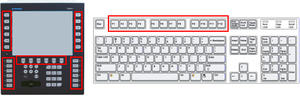

|
|
|
|
|
|
|
|
A Function Key is the hardware key on your target machine and the F1-F12 keys on your USB keyboard.

Function Keys can be set up to run operations. Be aware of the following concepts when setting up your Function Key operations:
Not all targets support hardware Function Keys or USB keyboards. For information about the Function Keys supported by your target machine, see Appendix 5.9, Function Keys Supported by Hardware Platforms.
|
|
|
UNINTENDED EQUIPMENT OPERATION When you connect one or more USB devices to a target machine via a USB hub, you must use a USB hub with external power supply. Failure to follow these instructions can result in death, serious injury, or equipment damage. |

A maximum of 32 operations can be set up on a single Function Key. This total includes both Target and Panel Function Key operations. For example, if you set up 10 Target Function Key operations on Function Key R1, then each panel in your project can have up 22 Panel Function Key operations for R1.
Panel Function Key operations cannot be configured for popup windows.
When a popup keypad is displayed, touch inputs, including Function Key inputs, are ignored as the system is waiting for keypad data input.
To test Function Keys at simulation, use the PC keyboard. For more information, see Section 25.3.4, Simulating the Keyboard.
Simultaneous Function Key presses:
When you press two Function Keys at the same time, operations are queued in the order the keys were pressed.
When you press a function key and a touch object at the same time, operations are queued in the order they were pressed.
There are two types of Function Keys:
Panel Function Keys
Panel Function Keys run operations that are assigned to a specific panel. Operations run when the panel is displayed on the target and the operator presses the Panel Function Key. Each panel in your project can have different Panel Function Key operations for the same Panel Function Key. For example, Panel Function Key R1 can be configured to both run a script when Panel A is displayed and open a popup window when Panel B is displayed. For more information on setting up Panel Function Keys, see Section 24.5.2, Panel Function Key.
Target Function Keys
Target Function Keys run operations that are assigned to the target. Operations run whenever the operator presses the Target Function Key, regardless of which panel is displayed on the target. For more information on setting up Target Function Keys, see Section 24.5.1.1, Target Function Key.
Both Panel Function Keys and Target Function Keys support labels. Labels can help the operator identify the operations that will run when the Panel or Target Function Key is pressed. There are two types of labels:
Panel Function Key Labels
Labels can be positioned on each panel to help identify the Panel Function Key operations set up for the panel. To set up a label, create a Switch with a label that identifies the Panel Function Key operation and position it near the Panel Function Key on the target. For more information on creating Switches, see Section 9.2, Creating Switches.
Target Function Key Labels
Labels can be printed out and attached to the target machine to help identify the operations for the Target Function Key. For more information on printing Target Function Key labels, see Section 27.2, Customizing and Printing Target Function Key Labels.
LEDs can be configured to indicate the Function Key's current state. For example, when the Function Key is locked out you can configure the LED to blink red. For more information on configuring LED behavior, see 24.5.3, LED Control.
Be aware of the following Function Key states:
Enabled State: The Function Key is enabled and runs its operations when the operator presses the key.
Secured State: The user logged into the target does not have a security level high enough to run Function Key operations. For more information on security, see Section 4.8, Setting up Security Protection for Targets and Projects.
Interlocked State: The Function Key is in the interlocked state and is locked out. Operations will not run when the panel operator presses the key. For more information on interlock, see Section 24.5.5, Setting Up Interlock for Function Keys.
The table below outlines the major differences between Panel Function Keys and Target Function Keys.
|
|
Panel Function Keys |
Target Function Keys |
|
Where setup is performed |
Setup is configured at the Panel level. For more information, see Section 4.7.1.1, Creating a New Panel. |
Setup is configured at the Target level. For more information, see Section 4.5.1, Target Properties. |
|
When operations run |
Operations run when the panel that is setup with the operations displays on the target and the operator presses the Panel Function Key. |
Operations run whenever the application is running on the target and the operator presses the Target Function Key. Operations are not dependent on the panel. |
|
How to identify Function Keys Operations
|
Labels can be added to the panel to identify the Panel Function Key operations using a Switch with a label. For more information, see Section 9.2, Creating Switches. |
Labels can be printed and attached to the Target Function Key to identify the operations. For more information, see Section 27.2, Customizing and Printing Target Function Key Labels. |